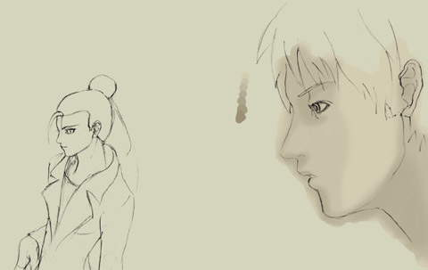
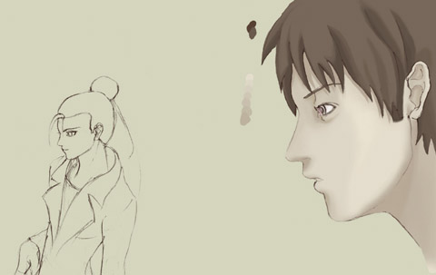
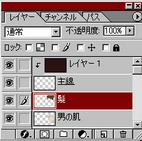
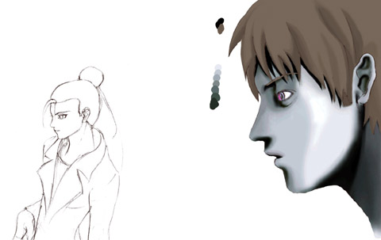
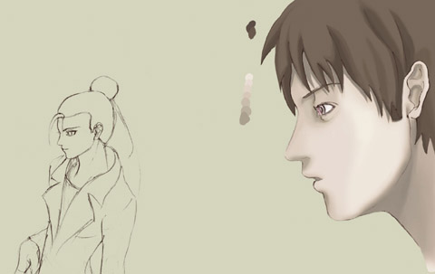

工程４
ひたすら塗れ
|
後は塗るだけです。ただ塗るだけです。満足いくまで塗るだけです。納得するまで塗るだけです。 一応、僕の塗り方を書いておきます。 まず下のレイヤーに塗った「基本色」の明度や彩度を少し落とした色で暗いところを塗っていきます。  ウラ技：「ブラシツール｣や「エアブラシツール」選択時に「Altキー」を押すと、カーソルがスポイトの形になります。 この時に画像をクリックすると、そのピクセルの色を選ぶことができます。 肌を塗り終わったら、新しいレイヤーを作って髪の毛も塗りましょう。 |
|
 |
 一番の上のレイヤーは「主線」レイヤーをグループ化したレイヤーです。 |
|
どうやらこの塗り方は「ギャルゲ塗り」呼ばわりされているようですね。 |
工程５
たまに補正
|
さて、髪も塗れました。  なんかモンスターが一匹生まれましたが気にしてはいけません。  |